01격물치지 소개
격물치지(格物致知) — 전과목 교과용 그림 그리기. 선생님이 시험지·학습지·수업 자료에 넣을 그림을 고르고, 고치고, 바로 붙여 넣는 프로그램입니다. 가입 없이 무료로, 웹(draw.mathmckay.kr)에서 바로 쓰거나 윈도우·맥·안드로이드 앱으로 씁니다.
그림 틀이 12,642개 들어 있습니다. 틀은 ‘미리 만들어 둔 그림’이라는 뜻으로, 누르면 그림판에 들어가고 글자·숫자·색·자리를 마음대로 고칠 수 있습니다.
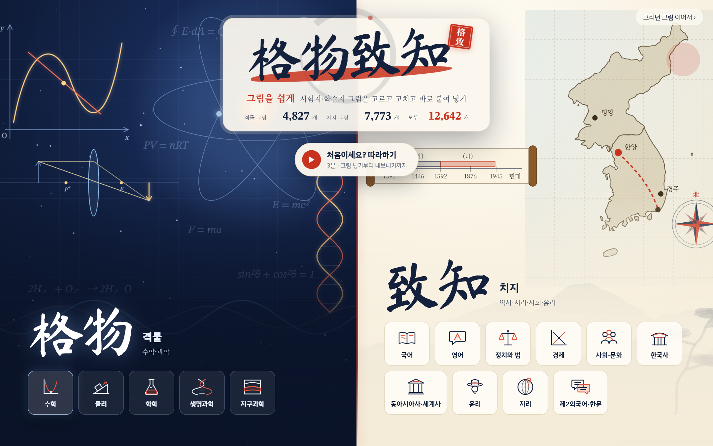
만든 뜻
‘격물치지’는 『대학』에 나오는 말로, 사물을 깊이 살펴 앎에 이른다는 뜻입니다. 좋은 그림 한 장은 학생이 개념을 살펴보고 스스로 이해에 이르게 돕는 길잡이가 됩니다. 격물치지는 선생님이 그런 그림을 쉽게 만들도록 돕기 위해 만들었습니다.
- 수업 준비 시간은 내용과 학생에게 — 그림 한 장에 한 시간이 걸리던 일을 틀을 고르고 숫자·글자만 바꿔 몇 분 만에 끝내고, 문항의 의도와 학생의 생각에 시간을 씁니다
- 정확한 그림이 정확한 이해를 만든다 — 작도 원리와 실제 값으로 그려 길이·각·눈금이 실제로 맞습니다. 비율이 어긋난 그림이 학생을 헷갈리게 하지 않게 합니다
- 한 과목이 아니라 모든 교과의 시각 자료 — 도형·그래프(수학·과학), 지도·연표(사회·역사), 장면·대화(국어·영어·제2외국어), 사고 실험·도식(윤리)을 한 도구에서 같은 방식으로 만듭니다
- 베끼는 대신 새로 만드는 문화 — 남이 만든 시험 그림을 오려 붙이는 대신 내 문항에 맞는 그림을 새로 만들어, 저작권 걱정을 줄이고 문항을 더 독창적으로 만듭니다
- 누구나, 어디서나, 안전하게 — 가입·비용 없이, 인터넷이 없어도, 웹·윈도우·맥·안드로이드에서 씁니다. 그림과 학습지는 어디에도 보내지 않아 학생 정보도 안전합니다
두 갈래: 격물과 치지
| 갈래 | 과목 | 그림 수 |
|---|---|---|
| 격물 (格物) | 수학, 물리, 화학, 생명과학, 지구과학 | 4,827개 |
| 치지 (致知) | 한국사, 윤리, 지리, 동아시아사·세계사, 경제, 정치와 법, 사회·문화, 국어, 영어, 제2외국어·한문 | 7,773개 |
| 공통 | 글상자·〈보기〉 상자·설명선 등 모든 과목에서 쓰는 것 | 42개 |
과목별 그림 수
| 과목 | 주요 그림 | 수 |
|---|---|---|
| 수학 | 도형·작도, 함수 그래프, 입체도형, 확률·통계, 수직선 | 1,934 |
| 물리 | 힘과 운동, 회로, 렌즈·파동, 에너지 준위, 운동 그래프 | 831 |
| 화학 | 전자 배치·루이스 전자점식, 기체·피스톤, 용액·적정, 반응 그래프 | 767 |
| 생명과학 | 염색체·세포 분열, 가계도, 신경·면역, 생태·계통수 | 667 |
| 지구과학 | 지층·단층, 일기도·전선, 천체·H-R도 | 627 |
| 한국사 | 연표, 지도, 사료 상자, 정치 조직 도식 | 745 |
| 윤리 | 사상가 대화, 판단 순서도, 관계 도식 | 499 |
| 지리 | 우리나라·세계 지도 칠하기, 기후 그래프, 통계 그래프 | 817 |
| 동아시아사·세계사 | 연표, 왕조·도읍 지도, 통치 구조 도식 | 591 |
| 경제 | 수요·공급 그래프, 경제 지표, 비용 표 | 467 |
| 정치와 법 | 권력 분립 도식, 의석 그래프, 사례 상자 | 408 |
| 사회·문화 | 계층 이동 표, 조사 자료 그래프, 대화 | 438 |
| 국어 | 매체 화면, 만화, 문법 표, 메모·초고 | 479 |
| 영어 | 듣기 장면, 선택지 ①~⑤, 도표, 안내문, 길 찾기 | 419 |
| 제2외국어·한문 | 독일어·프랑스어·스페인어·중국어·일본어·러시아어·아랍어·베트남어·한문 — 언어마다 300~330개 | 2,909 |
할 수 있는 일
- 고르기: 과목을 고르면 그 과목의 칸(분야)만 왼쪽에 보입니다. 칸을 열고 그림을 누르면 들어갑니다
- 고치기: 그림을 누르면 오른쪽 속성 창에서 글자·숫자·색·크기를 바꿉니다
- 장면 만들기: 사람·사물·말풍선을 놓고 자세·표정을 바꾸고, 한 장면을 ①~⑤로 복제해 선택지를 만듭니다
- 움직이는 그림: 슬라이더·재생·단계별 보여주기, GIF·동영상으로 내보내기
- 내보내기: PNG(인쇄용 300dpi), SVG, 한글용 그림, 워드·파워포인트에 실제 크기로 붙여 넣기, 흑백 시험지용으로 한 번에 바꾸기
- 학습지: 그림 여러 개를 A4 학습지에 모아 문제 글·정답과 함께 인쇄·PDF·워드·한글로
준비물
- 웹: 크롬·엣지·사파리 최신판에서 draw.mathmckay.kr — 설치 없이 바로
- 앱: 윈도우·맥·안드로이드 앱 (다음 장 「받기와 설치」)
- 인터넷: 처음 열 때 글꼴을 받아 옵니다. 그 뒤로는 대부분 인터넷 없이도 씁니다
- 저장: 그리던 그림은 자동 저장됩니다. 다른 컴퓨터로 옮기려면 [저장]으로 파일을 받거나 백업 파일을 쓰세요
세 가지 판
| 판 | 들어 있는 것 |
|---|---|
| 격물치지 (합본) — 웹·앱 | 모든 과목 (12,642개) |
| 격물.html | 격물 과목만 (수학·과학, 4,827개) |
| 치지.html | 치지 과목만 (역사·지리·사회·윤리·언어, 7,773개) |
02받기와 설치
draw.mathmckay.kr에 들어가면 첫 화면에 소개와 [웹에서 바로 쓰기], 그리고 앱 받기 칸이 있습니다. 쓰고 있는 기기에 맞는 칸이 맨 앞에 「이 컴퓨터」 표시와 함께 옵니다.
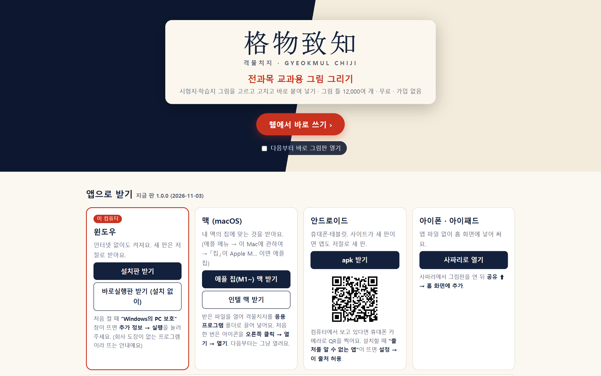
- [다음부터 바로 그림판 열기]를 켜 두면 다음부터 소개를 건너뛰고 그림판이 열립니다 (주소 끝에
#get을 붙이면 다시 첫 화면) - 그림판 안에서는 사용법 칸 [앱 받기 (윈도우·맥·안드로이드)]로 받기 칸에 갑니다
| 기기 | 받는 것 | 처음 한 번 |
|---|---|---|
| 윈도우 | 설치판(시작 메뉴·바탕화면 아이콘) 또는 바로실행판(설치 없이, USB에 넣어 다니기) | “Windows의 PC 보호” 창이 뜨면 추가 정보 → 실행. 회사 도장(코드 서명)이 없는 프로그램이라 뜨는 안내입니다 |
| 맥 | 애플 칩(M1~) 맥 또는 인텔 맥 파일 (애플 메뉴 → 이 Mac에 관하여 → 「칩」을 보세요) | 받은 파일을 열어 격물치지를 응용 프로그램 폴더로 끌어 넣고, 처음에만 아이콘을 오른쪽 클릭 → 열기 → 열기 |
| 안드로이드 | apk — 컴퓨터 화면의 QR을 휴대폰 카메라로 찍어도 됩니다 | “출처를 알 수 없는 앱”이 뜨면 설정 → 이 출처 허용을 켜고 돌아와 설치 |
| 아이폰·아이패드 | 앱 파일 없이 사파리에서 | 그림판을 연 뒤 공유 ⬆︎ → 홈 화면에 추가 |
새 판 저절로 받기
새 판이 나오면 화면 아래에 띠가 떠서 알려 줍니다. 판 번호표만 확인하고, 그림이나 개인 정보는 어디에도 보내지 않습니다.
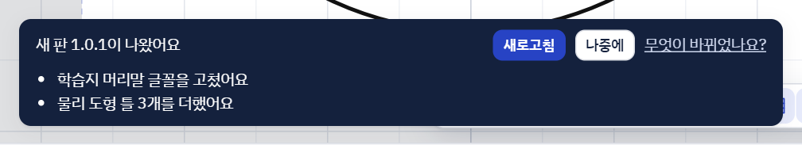
| 쓰는 곳 | 어떻게 |
|---|---|
| 윈도우·맥 앱 | 뒤에서 새 판을 받아 두고 [지금 다시 켜기] — 다음에 켤 때 저절로 새 판. 새 판이 열리다 멈추면 앞 판으로 돌아갑니다 |
| 안드로이드 앱 · 웹 | 사이트가 새 판이면 앱도 새 판 (웹은 띠의 [새로고침]) |
| 내려받은 HTML 파일 | 띠의 [새 판으로 바꾸기] → 지금 파일 이름이 채워진 저장 창에서 같은 자리에 [저장] → [바꾸기]. 그 파일을 다시 열면 새 판이고 그림은 그대로입니다 |
- 사용법 칸 맨 아래 판 번호 옆 [새 판 확인하기]로 언제든 직접 확인합니다
- [새 판 저절로 확인]을 끄면 저절로 확인하지 않습니다 (학교망처럼 바깥 연결이 막힌 곳에서는 조용히 넘어갑니다)
03시작하기
대문에서 과목 고르기
격물치지를 열면 맨 먼저 대문이 뜹니다. 가운데 위에 「格物致知」 현판과 그림 수가, 양쪽에 두 갈래가 있습니다.
- 가르치는 과목이 있는 쪽(왼쪽 격물 / 오른쪽 치지)에 마우스를 올리면 그쪽이 넓어집니다.
- 과목 단추(예: 물리, 한국사, 영어)를 누르면 그 과목의 첫 화면으로 들어갑니다.
- 첫 화면에서 [새 그림], 샘플 고르기, 최근 그림 가운데 하나로 시작합니다.
- 그리던 그림이 있으면 대문 아래 [그리던 그림 이어서 ›]가 보입니다
- 대문 가운데 [처음이세요? 따라하기]를 누르면 3분짜리 연습이 시작됩니다 (「따라하기」 장)
- 대문에서 Esc를 누르면 첫 화면으로 갑니다
과목 바꾸기
그림판 왼쪽 메뉴 맨 위의 과목 칸(예: “물리”)을 누르면 같은 갈래 안의 다른 과목으로 바로 바꿉니다. 격물 ↔ 치지 사이를 오갈 때는 첫 화면의 ‹ 격물치지 단추로 대문에 돌아갑니다 (한 갈래만 든 격물.html·치지.html에는 이 단추가 없습니다).
화면 구성
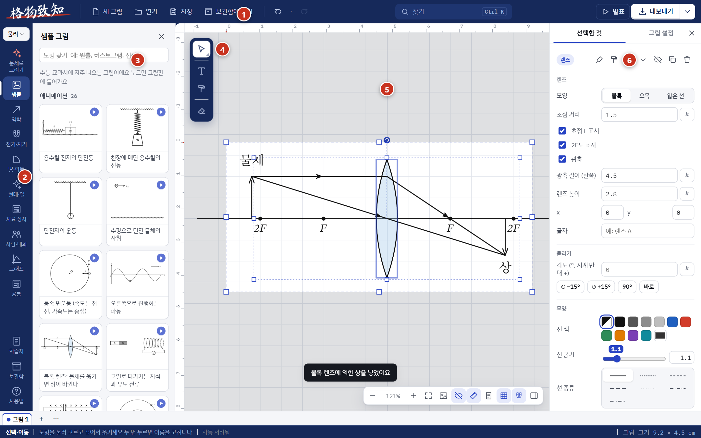
| 번호 | 부분 | 하는 일 |
|---|---|---|
| ① | 위쪽 막대 | 새 그림·열기·저장·보관함, 되돌리기, 찾기(Ctrl+K), 발표, 내보내기 |
| ② | 왼쪽 메뉴 | 맨 위 과목 칸, 그 아래 과목별 칸(분야). 맨 아래 공통·보관함·사용법 |
| ③ | 틀 칸 | 고른 칸의 그림 틀이 보입니다. 맨 위 소제목 단추로 묶음을 건너뜁니다 |
| ④ | 도구 상자 | 선택·글자·모양 복사·지우개 (수학은 점·선·도형·작도·표시 도구까지) |
| ⑤ | 그림판 | 그림을 고치는 곳. 휠로 확대·축소, 빈 곳을 끌면 화면 이동 |
| ⑥ | 속성 창 | 고른 그림의 글자·숫자·색·굵기를 바꿉니다. [그림 설정] 탭에서 전체 모양·흑백 |
3분 만에 첫 그림
- 대문에서 과목을 고르고, 첫 화면에서 [새 그림]을 누릅니다.
- 왼쪽 메뉴에서 [샘플](또는 분야 칸)을 눌러 틀 칸을 엽니다.
- 마음에 드는 그림을 누릅니다. 그림판 가운데에 들어옵니다.
- 고칠 곳(글자, 숫자, 사람 등)을 눌러 고르고, 오른쪽 속성 창에서 바꿉니다. 글자는 두 번 눌러 바로 고쳐도 됩니다.
- 오른쪽 위 [내보내기]의 ▾ → 이미지 복사를 누르고 워드·파워포인트에 붙여 넣습니다. 한글(HWP)에는 ▾ → 한글용 그림 받기로 받은 파일을 넣습니다.
무엇이든 찾기 (Ctrl+K)
위쪽 [찾기]나 Ctrl+K로 그림 틀·내 보관함·학습지·내 수식·내 스튜디오 파일·명령을 한 칸에서 찾습니다. 내가 만든 것이 먼저 나옵니다.
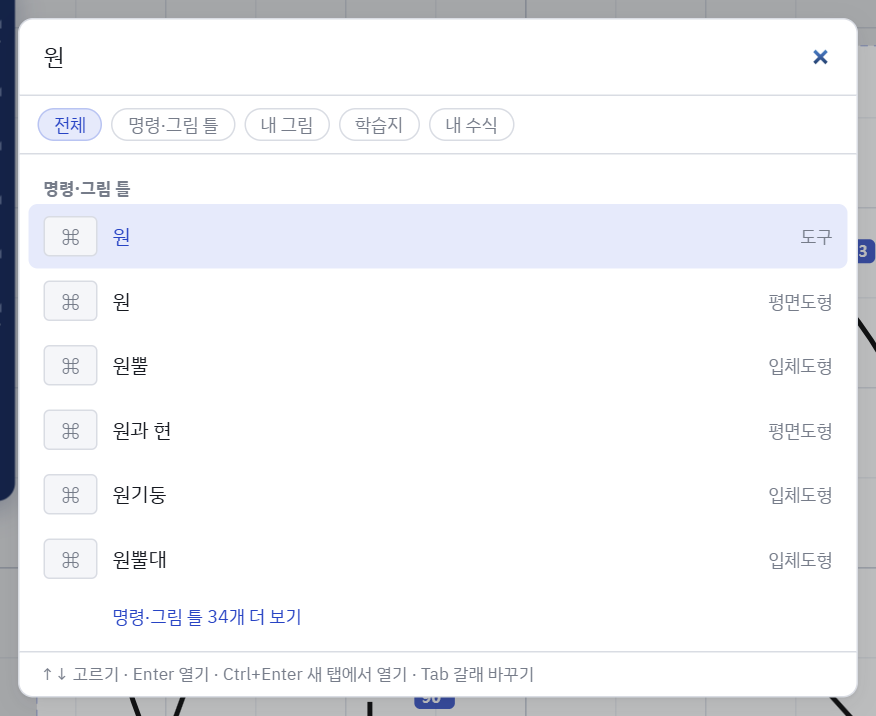
- Tab으로 갈래(전체·그림 틀·보관함·학습지·수식·스튜디오·명령)를 바꿉니다
- Enter로 열고, Ctrl+Enter는 새 탭에 엽니다
- 빈 칸이면 최근에 쓴 명령이 먼저 보입니다
04따라하기
따라하기는 실제 화면에서 직접 해 보며 익히는 연습입니다. 할 일이 카드에 뜨고, 눌러야 할 곳이 빛나는 테두리로 표시됩니다. 실제로 해내면 “잘했어요 ✓”가 뜨고 다음 단계로 넘어갑니다.
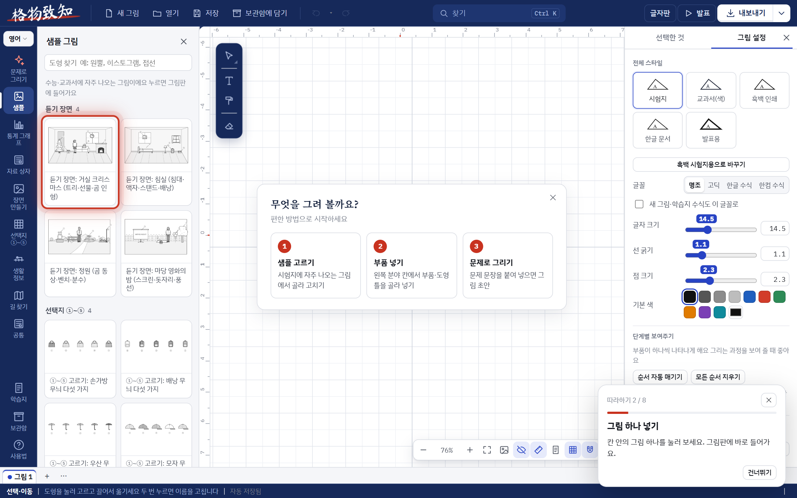
네 갈래
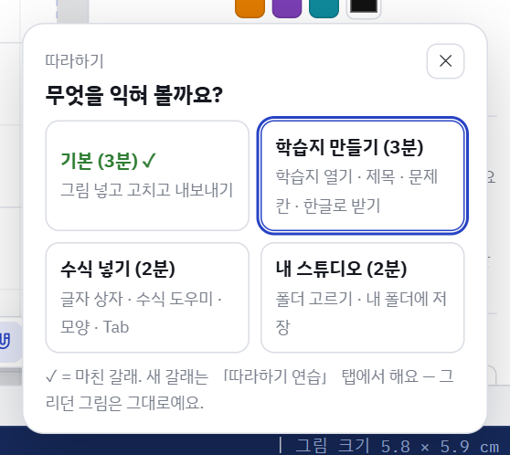
| 갈래 | 해 볼 일 |
|---|---|
| 기본 (3분) | 그림 넣고 고치고 내보내기 — 아래 표 |
| 학습지 만들기 | 연습 학습지에 그림 담기, 문제 글·보기 쓰기, 한글·워드로 |
| 수식 넣기 | 수식 도우미로 분수·제곱근 쓰기, 그림에 넣기 |
| 내 스튜디오 | 내 컴퓨터 폴더에 그림 저장하고 다시 열기 |
기본 갈래
| 단계 | 해 볼 일 |
|---|---|
| 1 | 왼쪽 메뉴에서 칸 열기 |
| 2 | 그림 하나 넣기 |
| 3 | 그림판에서 그림 고르기 |
| 4 | 오른쪽 속성 창에서 글자·숫자·색 바꾸기 |
| 5 | 끌어서 옮기기, 빈 곳을 끌어 화면 움직이기 |
| 6 | 되돌리기 (Ctrl+Z) |
| 7 | (국어·영어·제2외국어) 장면을 ①~⑤로 복제하기 |
| 마지막 | 내보내기 단추 눌러 보기 |
- 시작하는 곳: 대문 가운데 [처음이세요? 따라하기](기본을 마친 뒤에는 갈래 고르기), 왼쪽 메뉴 [사용법] 칸의 [▶ 따라하기 (3분)], Ctrl+K에서 “따라하기”
- [건너뛰기]로 한 단계를 넘기고, ✕ 또는 Esc로 언제든 끝냅니다
- 끝까지 마치면 이 브라우저에 기억되어 대문의 단추가 더는 반짝이지 않습니다. [처음부터 다시]로 다시 할 수 있습니다
05그림 넣고 고치기
틀 칸 열기
왼쪽 메뉴의 칸을 누르면 틀 칸이 열립니다. [샘플]에는 그 과목의 대표 그림이 분야별로, 분야 칸(예: 물리의 역학, 한국사의 지도)에는 그 분야 그림이 모두 들어 있습니다.
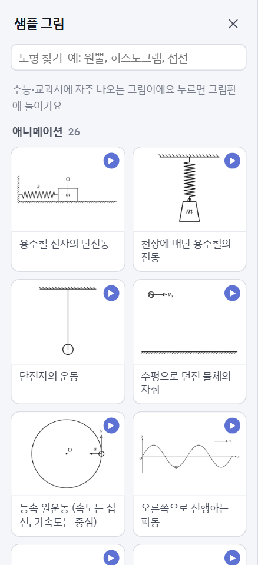
- 칸 맨 위의 소제목 단추(예: 역학 · 전기·자기 · 빛·파동)를 누르면 그 묶음으로 바로 내려갑니다
- 그림 위에 마우스를 올리면 이름이 보이고, 움직이는 그림은 미리 움직입니다
- 같은 칸 단추를 다시 누르거나 칸 오른쪽 위 ✕로 칸을 닫습니다
찾기
위쪽 [찾기] 또는 Ctrl+K를 누르고 낱말을 씁니다. “기후 그래프”, “빗면”, “수요 공급”, “카페”처럼 그림 이름이나 하고 싶은 일(“백업”, “발표”)을 쓰면 틀·도구·명령이 함께 나옵니다.
그림 넣기
- 틀을 누르면 그림판에 들어갑니다. 그리던 그림이 있으면 그 옆에 놓입니다
- 사람·사물·말풍선 같은 장면 부품은 배경이 있으면 그 배경 안에 차례로 놓입니다
- 개수가 달라질 수 있는 틀(벤 다이어그램, 막대그래프, 표 등)을 넣으면 개수·값 정하기 창이 뜹니다. 값을 바꾸면 그림이 바로 바뀌고 [다 됐어요]로 마칩니다
고르기와 옮기기
| 하고 싶은 일 | 방법 |
|---|---|
| 그림 고르기 | 넣은 그림을 한 번 누르면 그림 전체(묶음)가 골라지고 둘레에 점 8개가 생깁니다 |
| 조각 하나 고르기 | 묶음이 골라진 채 한 번 더 누르면 그 조각(글자·사람·선 등) 하나만 골라집니다 |
| 여러 개 고르기 | Shift를 누른 채 차례로 누르거나, Shift·Ctrl을 누른 채 빈 곳에서 끌어 네모로 감쌉니다 |
| 모두 고르기 | Ctrl+A |
| 옮기기 | 고른 것을 손바닥으로 끕니다. 조각 하나만 골랐을 때 점을 끌면 모양이 바뀌고, 글자를 끌면 글자 자리만 옮겨집니다 |
| 크기 바꾸기 | 고른 것 둘레의 점 8개를 끕니다. 모서리 점을 Shift를 누른 채 끌면 비율 그대로 (사람 그림 하나는 머리 위 점) |
| 묶기 · 묶음 풀기 | 여러 개를 고르고 Ctrl+G (오른쪽 클릭 → 묶기). 풀 때는 Ctrl+Shift+G. 틀 하나로 넣은 그림은 저절로 한 묶음입니다 |
| 돌리기 | 사람·사물·표지판·자료 상자 같은 부품을 하나 고르면 그림 위에 생기는 파란 둥근 점을 끌어 돌립니다(15° 근처에서는 딱 맞춰집니다). 또는 속성 창 돌리기에서 각도를 쓰거나 ↻ −15° · ↺ +15° · 90° · 바로 단추를 누릅니다. 여러 개(묶음)는 15° 돌리기로 가운데를 축으로 함께 돌립니다 |
| 연달아 놓기 | 고른 것을 같은 간격으로 여러 개 놓습니다. 속성 창 연달아 놓기에서 개수·간격·방향(오른쪽으로·아래로·바둑판)을 정하고 [만들기]를 누릅니다(오른쪽 클릭 메뉴에도 있어요). 의자 5개, 나무 한 줄처럼 쓰고, 묶음은 묶음째 늘어납니다 |
| 번호 붙이기 | 여러 개(묶음은 하나로 셉니다)를 고르고 속성 창 번호 붙이기에서 모양(① ② ③ · (1) · 1 · A · ㄱ · 가)과 자리(위·아래)를 정해 [붙이기]를 누릅니다. 윗줄부터 왼쪽→오른쪽 차례로 붙고, 번호는 그 그림과 함께 묶여 같이 움직입니다. 다시 누르면 번호가 새로 생기지 않고 바뀝니다 |
| 증감표·조립제법 | 수학 틀 증감표의 표를 고르면 속성 창 함수식으로 채우기에 식(예: x^3-12x)을 쓰고 [채우기]를 누릅니다. x값·부호·↗↘·극대·극소와 위 제목이 저절로 바뀌고, 극값 자리를 (가)·(나) 빈칸으로 바꿀 수도 있습니다. [그래프 함께 놓기]를 누르면 같은 식의 그래프와 극값 점선·눈금이 생기고, 식을 바꾸면 그래프도 함께 바뀝니다. 조립제법은 나뉠 식과 k(x − k의 k)만 고치면 다시 계산되고, 몫·나머지도 알려 줍니다 |
| 맞추기·간격 | 두 덩어리 이상 고르면 속성 창 맞추기에서 왼쪽·가운데·오른쪽·위·아래로 맞춥니다. 세 덩어리 이상이면 가로·세로 간격 같게 (묶음은 한 덩어리) |
| 화면 움직이기 | 빈 곳을 끕니다 (손바닥 모양). 스페이스를 누른 채 끌거나, 노트북 터치패드를 두 손가락으로 쓸어도 됩니다 |
| 확대·축소 | 마우스 휠, 터치패드 두 손가락 오므리기·벌리기, + -, 그림에 맞추기 0 |
속성 창에서 고치기
그림을 고르면 오른쪽 속성 창에 그 그림이 가진 칸이 나옵니다. 글자 칸·숫자 칸·색·선 굵기·글자 크기, 사람 그림이면 자세·표정까지 여기서 바꿉니다.
- 글자는 그림에서 두 번 눌러 바로 고쳐도 됩니다
- 오른쪽 클릭 메뉴에 복사·복제·숨기기·앞으로·뒤로·지우기 같은 일이 모여 있습니다
- 모양 복사(Ctrl+Alt+C) → 다른 그림 고르고 모양 붙이기(Ctrl+Alt+V)로 색·굵기만 옮깁니다
- 속성 창은
]키(오른쪽 대괄호)나 창 위 단추로 접고 폅니다
표 고치기 (줄·칸 더하기)
표·통계 그래프 자료·게시판 글 목록·영수증·메뉴판·날씨 표는 속성 창에 표 편집기가 나옵니다. 칸을 눌러 바로 고치고, 아래 단추로 줄·칸을 더하고 뺍니다.
원·띠그래프·막대그래프·히스토그램·산점도·연표·세포 주기·반응 양 표·쌓기나무의 자료도 표 편집기로 고칩니다. 칸 위에 이름(항목 · 값 등)이 보이고, 단추 이름이 ＋ 항목·＋ 막대·＋ 계급·＋ 사건·＋ 점처럼 바뀝니다. 히스토그램의 계급(50 ~ 60) 칸은 첫 계급·계급 크기로 저절로 정해져서 도수 칸만 고칩니다.
| 단추·키 | 하는 일 |
|---|---|
| ＋ 줄 / ＋ 칸 | 누른 칸의 아래에 줄, 오른쪽에 칸을 더합니다 (새 줄로 바로 옮겨 갑니다) |
| － 줄 / － 칸 | 누른 칸의 줄·칸을 뺍니다 (마지막 하나는 남습니다) |
| Enter / Tab | 아래 칸 / 다음 칸으로. 마지막 줄에서 Enter를 누르면 새 줄이 생깁니다 |
| 글로 고치기 | 표 전체를 글로 한꺼번에 고칩니다 (칸은 | , 그래프 자료는 쉼표). 표로 고치기로 돌아옵니다 |
- 게시판 탭·화상 회의 단추·길 찾기 지도의 길 이름·글자 칸·영수증 합계처럼 한 줄짜리 칸도 칸마다 고치고 ＋ 칸·－ 칸으로 더하고 뺍니다 (Enter는 오른쪽에 새 칸)
- 표를 고르면 빠른 표 꼴에서 확률분포표·도수분포표·이원분류표·표준정규분포표·빈 표 3×3을 단추 하나로 채웁니다 (지금 내용은 바뀌고, Ctrl+Z로 되돌립니다)
되돌리기
실수해도 괜찮습니다. 위쪽 ↶나 Ctrl+Z로 되돌리고, ↷나 Ctrl+Y로 다시 합니다. [새 그림]으로 그림을 비웠다면 보관함 칸 맨 아래 [지난 그림 되찾기]에서 되살립니다.
작업 탭 — 여러 그림을 나란히
그림판 아래 탭 줄에서 그림을 여러 장 열어 두고 오갑니다. 시험지 한 장에 들어갈 그림 여러 개를 동시에 만들 때 씁니다.
- ＋로 새 탭, 탭을 눌러 오가기. Alt+N 새 탭, Alt+W 탭 닫기
- 탭마다 따로 자동 저장되고, 되돌리기도 탭마다 따로입니다
- 탭 이름을 두 번 눌러 바꿉니다. 찾기에서 Ctrl+Enter로 고른 것을 새 탭에 엽니다
06수식
수식 도우미
글자 칸 옆 기호 막대의 [수식 도우미]를 누르면, 어려운 수식 문법 없이 쉽게 쓴 식이 수식으로 바뀝니다. 지금 쓴 식이 그림에서 어떻게 보이는지 미리 보기도 됩니다. 분수·제곱근·그리스 문자 단추를 눌러 넣어도 됩니다.
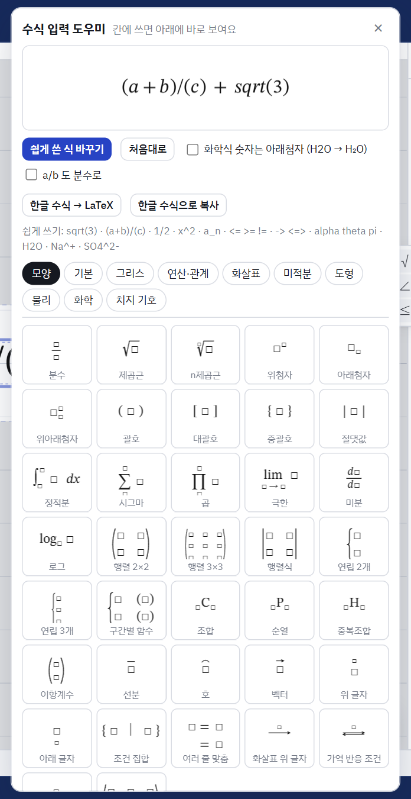
| 이렇게 쓰면 | 이렇게 보입니다 |
|---|---|
sqrt(3), 루트(3) | √3 |
(a+b)/(c) | 분수 (위 a+b, 아래 c) |
x^2, a_n | x², aₙ (위첨자·아래첨자) |
<=, >=, -> | ≤, ≥, → |
H2O, Na^+, SO4^2- | H₂O, Na⁺, SO₄²⁻ (화학식) |
alpha, theta, pi | α, θ, π |
- 자주 쓰는 식은 ★를 눌러 내 수식 모음에 담아 두고 다시 씁니다 (찾기에서도 나옵니다)
- 수식 글자 모양은 속성 창 글꼴에서 명조(수능)·고딕·한글 수식·한컴 수식 가운데 고릅니다
한글(HWP) 수식과 주고받기
- 한글 수식 편집기의 글(
{a} over {b},sqrt {x}등)을 붙여 넣으면 저절로 이 앱의 수식으로 바뀝니다. 수식 도우미의 [한글 수식 → LaTeX]로도 바꿉니다 - [한글 수식으로 복사]를 누르고 한글 수식 편집기(Ctrl+N, M)의 입력 칸에 붙여 넣으면 한글 수식이 됩니다
- [그림 설정] 탭의 전체 스타일 [한글 문서]를 고르면 한글 문서의 10pt 수식과 같은 크기·글꼴로 맞춰집니다. [새 그림·학습지 수식도 이 글꼴로]를 켜면 새로 만드는 것에도 적용됩니다
07격물 ① 수학
수학에는 그림 틀 1,934개와 함께 직접 그리는 도구가 있습니다. 왼쪽 메뉴 칸: 문제로 그리기 · 샘플 · 평면도형 · 입체도형 · 함수 · 해석기하 · 미적분 · 통계 · 수직선·기타 · 공통.
도구 상자
도구가 묶음으로 정리되어 있습니다. 묶음 단추(오른쪽 아래 작은 삼각형)를 누르면 묶음 안 도구가 이름·단축키와 함께 펼쳐집니다.
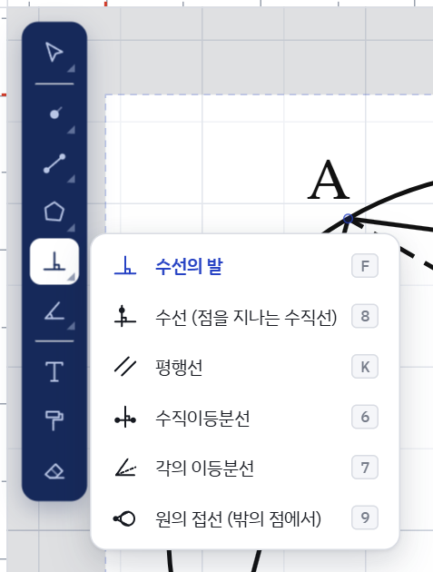
| 묶음 | 도구 (단축키) |
|---|---|
| 선택 | 선택·이동 V, 화면 이동 H |
| 점 | 점 P, 좌표로 점 5, 중점 M, 교점 I |
| 선 | 선분 S, 길이가 주어진 선분 1, 직선 L, 반직선 Y, 화살표(벡터) W |
| 도형 | 다각형 G, 정다각형 4, 원 C, 중심과 반지름으로 원 2, 부채꼴·호 Q |
| 작도 | 수선의 발 F, 수선 8, 평행선 K, 수직이등분선 6, 각의 이등분선 7, 원의 접선 9 |
| 표시 | 각 표시 A, 크기가 주어진 각 3, 직각 표시 R, 길이 표시 D, 같은 길이 표시 T |
| 글자·색칠·지우개 | 글자 X, 영역 색칠 B, 지우개 E |
수치로 그리기
점을 찍으면 그 옆에 값을 넣는 칸이 뜹니다. √2, π/3 같은 식도 쓸 수 있고, k처럼 문자를 쓰면 슬라이더가 생겨 움직이는 그림이 됩니다.
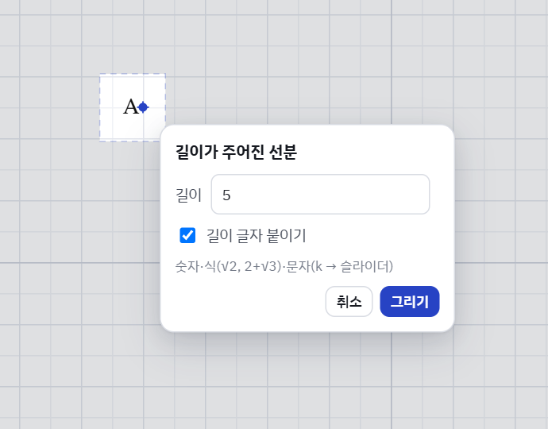
| 도구 | 쓰는 법 |
|---|---|
| 길이가 주어진 선분 1 | 시작점을 찍고 길이를 넣습니다. 끝점을 끌면 길이는 그대로, 방향만 돌아갑니다 |
| 중심과 반지름으로 원 2 | 중심을 찍고 반지름을 넣습니다 |
| 크기가 주어진 각 3 | 끝점 → 꼭짓점을 찍고 각도와 방향을 고릅니다 |
| 정다각형 4 | 두 꼭짓점을 찍고 변의 수(3~20)를 넣습니다 |
| 좌표로 점 5 | (π/2, 1)처럼 정확한 좌표로 점을 찍습니다 |
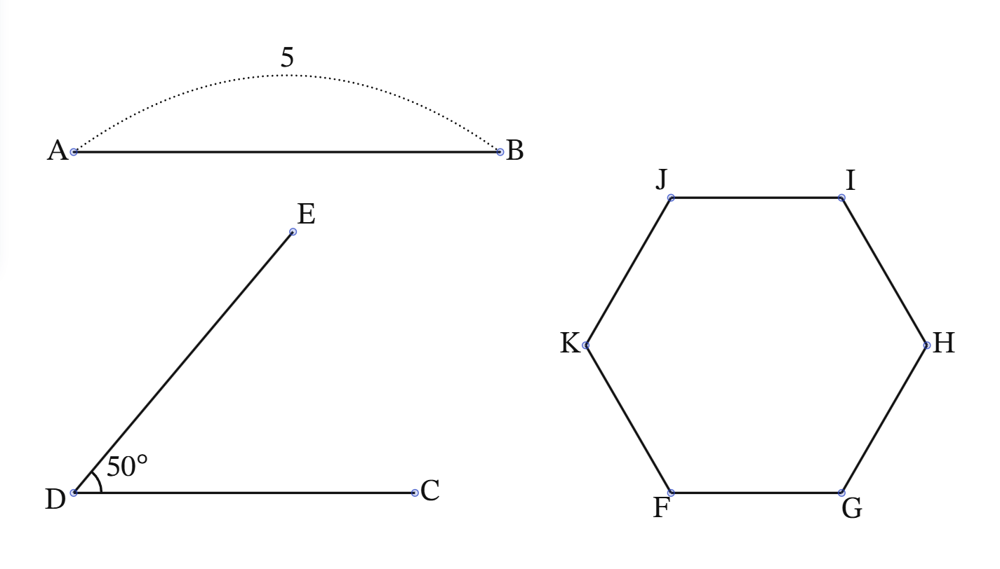
작도
작도 도구로 만든 선은 점에 묶여 있어서, 점을 옮기면 작도도 함께 따라 움직입니다. 수직이등분선은 두 점, 각의 이등분선은 끝점 → 꼭짓점 → 끝점, 원의 접선은 원 밖의 점 → 원을 차례로 누릅니다.
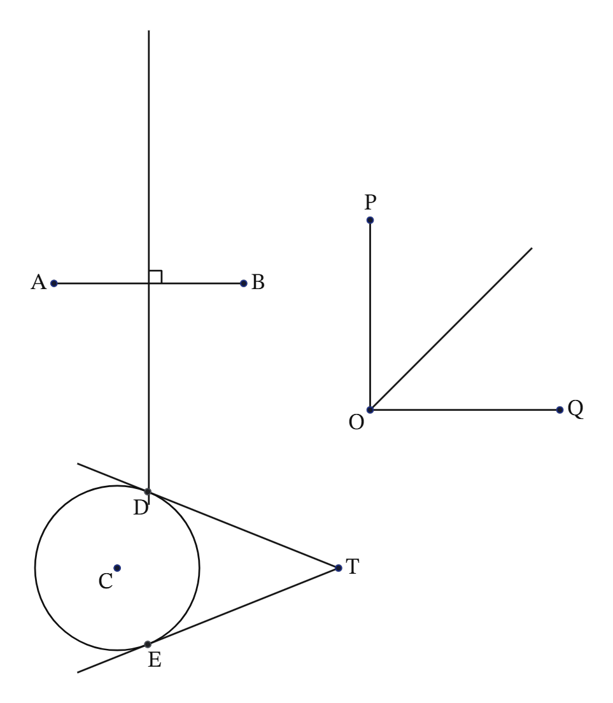
함수·부등식·입체·확률
- 함수 칸의 식으로 바로 그리기에
x^3-3x,abs(x-1)처럼 쓰고 [그리기]. 부등호가 있으면(y>x^2) 영역이 칠해집니다 - 수직선의 속성 창에
x<-1 또는 x≥2처럼 쓰면 해 구간이 표시됩니다 - 입체도형은 Alt를 누른 채 끌어 돌려 봅니다. 숨은 모서리는 점선으로 그려집니다
- 정규분포·히스토그램·줄기와 잎·상자그림·주머니와 공 같은 확률 그림은 통계 칸에 있습니다
수식 글자
| 쓰는 법 | 보이는 모양 |
|---|---|
x^2, a_{n+1} | 위첨자, 아래첨자 |
√3, \sqrt{3}, \frac{1}{2} | 제곱근, 분수 |
\overline{AB}, \pi, \theta | 선분 기호, 그리스 문자 |
n = \val{n} | 지금 변수 값 (예: n = 25) |
문제로 그리기
[문제로 그리기] 칸에 문제 문장을 붙여 넣으면 그림 초안을 그립니다. 기본 해석기는 인터넷·요금 없이 삼각형·원·함수·입체·정규분포 같은 문제를 알아듣습니다. “세 변의 길이가 3, 4, 5인 삼각형 ABC”처럼 길이·각을 쓰면 그 비율과 각도로 그립니다.
08격물 ② 과학
물리·화학·생명과학·지구과학은 수능·교과서 그림을 바탕으로 만든 과학 부품(빗면·도르래·회로·렌즈·비커·염색체·지층·일기 기호 등)과 그래프로 되어 있습니다. 부품을 고르면 속성 창에서 크기·개수·글자·화살표를 바꿉니다.
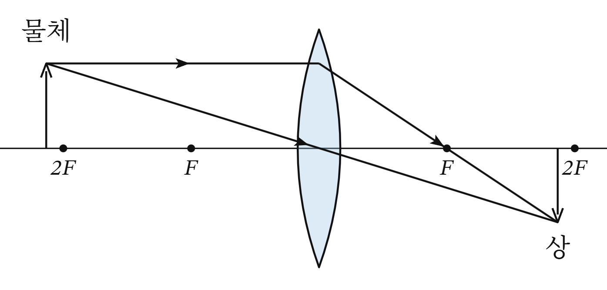
과목별 칸
| 과목 | 왼쪽 메뉴 칸 |
|---|---|
| 물리 | 역학 · 전기·자기 · 빛·파동 · 현대·열 · 그래프 |
| 화학 | 원자·결합 · 기체·양적 관계 · 용액·산과 염기 · 그래프 |
| 생명과학 | 세포·유전 · 항상성과 몸 · 생태·진화 · 그래프 |
| 지구과학 | 지질 · 대기·해양 · 천체·우주 · 그래프 |
| 네 과목 공통 | 자료 상자(탐구 과정·탐구 보고서) · 사람·대화(학생 A·B·C 대화) · 공통 |
그래프
- 그래프 칸에는 운동 그래프(위치·속도·시간), 활동 전위, 반응 속도, 용해도, 방사성 붕괴, 지진파 주시 곡선 같은 그래프가 있습니다
- 그래프를 고르면 속성 창에서 축 이름·눈금·자료 점·곡선 이름(범례)을 고칩니다
- 곡선을 오른쪽 클릭 → 아래 음영 넣기로 곡선 아래를 회색으로 칠합니다 (흑백 시험지 기본)
탐구 보고서와 학생 대화
자료 상자 칸의 “탐구 과정 및 결과”, 사람·대화 칸의 “학생 A·B·C 대화”는 수능 과학탐구에 자주 나오는 꼴입니다. 상자 속 글은 속성 창에서 바로 고칩니다.
애니메이션
샘플 칸 맨 위 애니메이션 묶음에는 움직이는 과학 그림이 있습니다. 넣으면 멈춘 채로 들어오고, 그림판 위 도크의 ▶로 재생합니다 (「움직이기」 장).
09치지 ① 역사·지리·사회·윤리
한국사·윤리·지리·동아시아사·세계사·경제·정치와 법·사회·문화는 같은 일곱 가지 칸을 과목에 맞게 골라 씁니다. 그림 속 글자는 모두 고칠 수 있어서, 연표의 사건이나 지도의 칠한 곳을 바꿔 새 문제를 만들 수 있습니다.
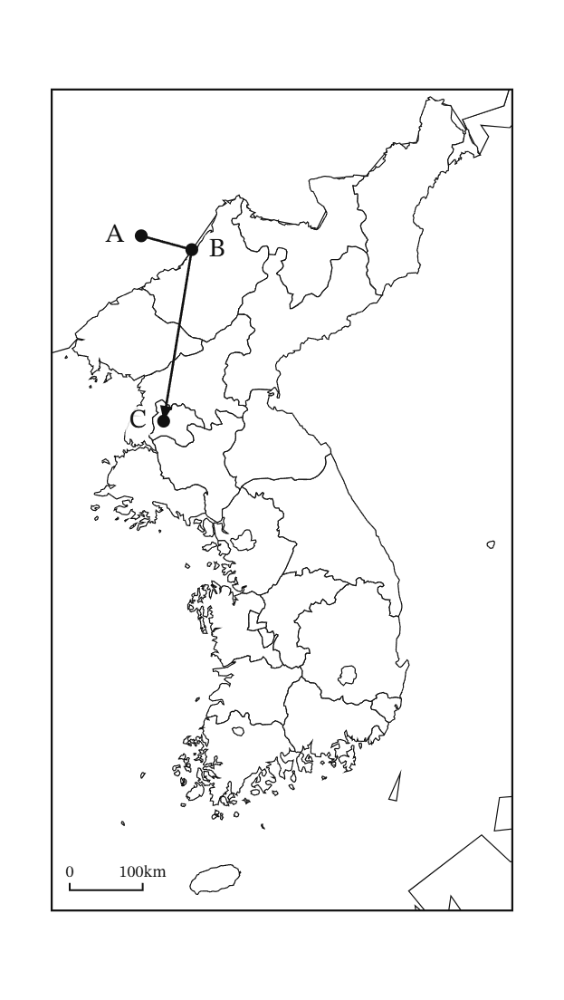
| 칸 | 들어 있는 것 | 많이 쓰는 과목 |
|---|---|---|
| 연표 | 시대 구분 띠, 사건 연표, (가)~(마) 구간 | 한국사, 동아시아사·세계사 |
| 지도 | 우리나라·시·도·세계·동아시아 지도, 사건 장소·이동 경로, 나라·지역 칠하기 | 지리, 한국사, 세계사 |
| 통계 그래프 | 막대·띠·원·꺾은선·인구 피라미드·기후 그래프 | 지리, 사회·문화, 정치와 법 |
| 경제 그래프 | 수요·공급 곡선과 이동, 총수요·총공급, 생산 가능 곡선 | 경제 |
| 도식·표 | 정치 조직·권력 분립 도식, 순서도, 벤 다이어그램, 교차표 | 모든 과목 |
| 자료 상자 | 신문 기사, 두루마리 사료, 펼친 책, 칠판, 휴대폰 화면, 〈보기〉 상자 | 모든 과목 |
| 사람·대화 | 교사·학생·사상가와 말풍선, 토론·인터뷰·수업 장면 | 윤리, 사회·문화 |
지도 칠하기와 표시
- 지도를 고르면 속성 창에서 칠할 지역, (가)~(마) 같은 표시 글자, 색·무늬를 바꿉니다
- 시·도 칠하기 지도는 흑백으로 바꾸면 회색 단계와 빗금 무늬로 나뉘어 인쇄해도 구분됩니다
- 사건 장소·이동 경로 지도는 점과 화살표 글자를 고쳐 다른 사건으로 바꿉니다
기후 그래프
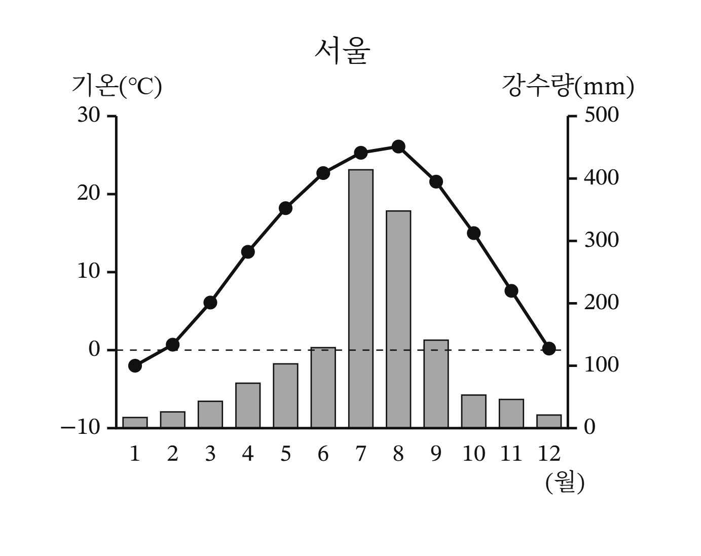
도시 41곳의 기후 그래프가 들어 있습니다. 속성 창에서 달마다 기온·강수량을 고치면 그래프가 바로 바뀝니다.
자료 상자의 빈칸 (가)
자료 상자·말풍선의 글 칸에 (가), (나)처럼 그냥 쓰면 시험지처럼 네모 빈칸으로 보입니다. 뒤에 붙는 ‘는·를·에’는 네모 밖에 그대로 붙습니다. 처음 (가)를 써 넣으면 그 상자에서 이 방식이 저절로 켜지고 알림이 뜹니다.
- 그냥 글자로 두려면 속성 창의 (가)·(나)를 빈칸 네모로를 끕니다
- 다른 말도 네모 빈칸으로 만들려면 대괄호 두 겹으로 감쌉니다 (예: ［［정책］］ — 실제로는 반각 대괄호). 밑줄 두 개로 감싸면 밑줄 글입니다
- 줄 맨 앞의 ‘(가) …’는 항목 번호로 보고 네모로 바꾸지 않습니다
사람과 말풍선
사람 그림을 고르면 속성 창 맨 위에 [말풍선 달기]와 [옆에 사람 더하기]가 있습니다. 말풍선은 사람을 옮기면 꼬리가 따라오고, 새로 더한 사람의 이름은 갑 → 을 → 병 차례로 붙습니다. 자세·표정 바꾸기는 다음 장에 자세히 있습니다.
10치지 ② 국어·영어·제2외국어
언어 과목은 장면 만들기가 중심입니다. 사람·사물·배경을 골라 장면을 만들고, 한 장면을 ①~⑤로 복제해 칸마다 조금씩 바꾸면 듣기·읽기 선택지 그림이 됩니다.
| 과목 | 왼쪽 메뉴 칸 |
|---|---|
| 국어 | 장면 만들기 · 만화 · 매체 화면 · 도식·표 · 통계 그래프 · 자료 상자 |
| 영어 | 장면 만들기 · 선택지 ①~⑤ · 통계 그래프(도표) · 생활 정보 · 길 찾기 · 자료 상자 |
| 제2외국어·한문 | 장면 만들기 · 선택지 ①~⑤ · 생활 정보 · 길 찾기 · 매체 화면 · 자료 상자 |
장면 만들기
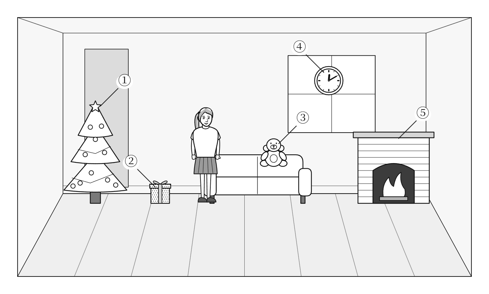
- [장면 만들기] 칸에서 배경(교실·거실·카페·공원 등)이나 완성된 장면을 넣습니다.
- 같은 칸의 사람·사물·말풍선을 누르면 배경 안 바닥에 차례로 놓입니다.
- 끌어서 자리를 잡고, 머리 위 손잡이로 크기를 맞춥니다.
- 사람을 고르고 속성 창에서 자세·표정·보는 쪽을 바꿉니다.
사람 그림 고치기
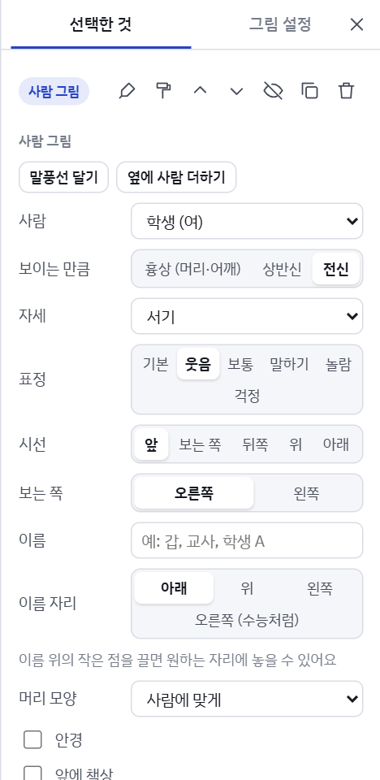
| 칸 | 고를 수 있는 것 |
|---|---|
| 사람 | 학생·어린이·교사·시민(남·여), 할아버지·할머니, 과학자·의사·근로자·농부·경찰관, 앵커·기자, 선비·한복 여인·왕, 서양 사상가 — 20가지 |
| 보이는 만큼 | 흉상(머리·어깨), 상반신, 전신 |
| 자세 | 서기, 손 펴서 가리키기, 손들기, 손 흔들기, 팔짱, 턱 괴기, 종이 들기, 앉기 |
| 표정 | 웃음, 보통, 말하기, 놀람, 걱정 |
| 보는 쪽 | 오른쪽, 왼쪽 |
| 이름·이름 자리 | 예: 갑, 교사, 학생 A / 아래 또는 오른쪽(수능처럼) |
| 그 밖에 | 머리 모양 8가지, 안경, 앞에 책상, 윗옷·아래옷 색, 컬러 (끄면 흑백 시험지) |
장면 복제로 선택지 ①~⑤ 만들기
[장면 만들기]·[선택지 ①~⑤] 칸(국어는 [만화] 칸) 맨 위의 장면 복제 상자를 씁니다.
- 장면 하나를 완성합니다.
- 칸 수(2~6칸), 배치(가로 한 줄 · 두 줄 3+2 · 두 열 · 세로 한 줄), 칸 이름(① ② ③ / (가) (나) / A B C / 1 2 3 / 없음)을 고릅니다. 만화라면 칸마다 네모 테두리를 켭니다.
- [지금 장면을 ①~⑤로 복제](만화는 [지금 장면을 연속 장면으로])를 누릅니다.
- 칸마다 물건 자리·사람 자세·표정·말풍선만 바꾸면 선택지가 완성됩니다.
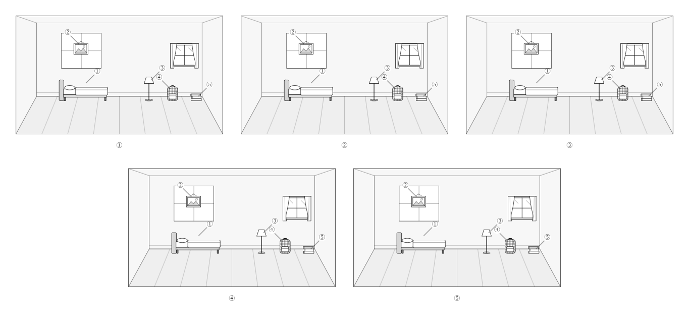
매체 화면·생활 정보·길 찾기
- 매체 화면: 게시판·블로그·화상 회의·방송·메신저·이메일·발표 화면. 글은 속성 창에서 고칩니다
- 생활 정보: 표지판·메뉴판·달력·표·영수증·안내문(포스터)
- 길 찾기: 거리 지도·층 안내도에 ①~⑤ 건물 표시
- 도표(영어): 묶은 막대·누적 100% 막대·원 두 개 등 도표 문항 꼴
제2외국어: 언어 고르기
제2외국어·한문 과목에서 칸을 열면 맨 위에 언어 고르기 줄이 있습니다. 독일어·프랑스어·스페인어·중국어·일본어·러시아어·아랍어·베트남어·한문 가운데 하나를 누르면 그 언어의 그림(언어마다 300~330개)만 보입니다. 고른 언어는 기억되어 다음에 열어도 그대로입니다.
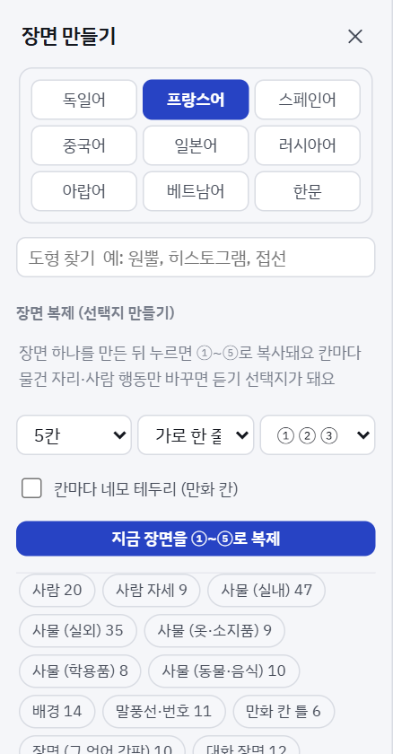
글자판: 키보드에 없는 글자 넣기
국어·영어·제2외국어 과목에서는 위쪽 막대에 [글자판] 단추가 생깁니다. 키보드에 없는 글자를 눌러서 넣습니다.
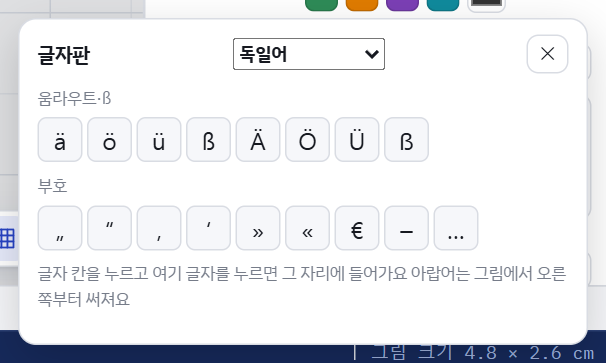
- 그림의 글자를 고르고, 오른쪽 속성 창의 글자 칸을 한 번 누릅니다 (글자가 들어갈 자리).
- 위쪽 [글자판]을 누릅니다. 지금 고른 언어의 글자판이 열립니다 (맨 위 목록에서 다른 언어로 바꿀 수도 있습니다).
- 넣을 글자를 누르면 글자 칸의 그 자리에 들어가고, 그림이 바로 바뀝니다.
| 언어 | 글자판에 있는 글자 |
|---|---|
| 독일어·프랑스어·스페인어 | ä ö ü ß / é è ê ç à ù œ / ñ á í ó ú ¿ ¡ 등 |
| 러시아어 | 키릴 자모 전체 |
| 베트남어 | ă â đ ê ô ơ ư 와 성조 표시 |
| 일본어 | 히라가나·가타카나 50음 |
| 중국어 | 병음 성조(ā á ǎ à)와 자주 쓰는 한자 |
| 아랍어 | 아랍 자모 28자 — 그림에서 오른쪽부터 써집니다 |
| 한문 | 자주 쓰는 한자와 훈점 기호 |
| 국어 / 영어 | 옛한글 / 번호·기호 |
11움직이기
변수와 슬라이더
식이나 숫자 칸에 a, k 같은 한 글자 문자를 쓰면 그 문자가 변수가 되고, 그림판 위쪽 도크에 슬라이더가 생깁니다. 속성 창 숫자 칸 옆 [k] 단추를 누르면 지금 숫자가 슬라이더로 바뀝니다.
재생
- 도크의 ▶로 재생, 다시 누르면 멈춥니다. 변수가 둘 이상이면 [▶ 모두 재생]
- 재생 방식: 왕복 / 한 번 / 반복, 속도: 0.25~4배
- 흔적: 점·선분의 속성 창에서 켜면 지나간 자리가 남습니다
- 변수 값 글자: 글자에
n = \val{n}을 쓰면 재생할 때 숫자가 따라 바뀝니다
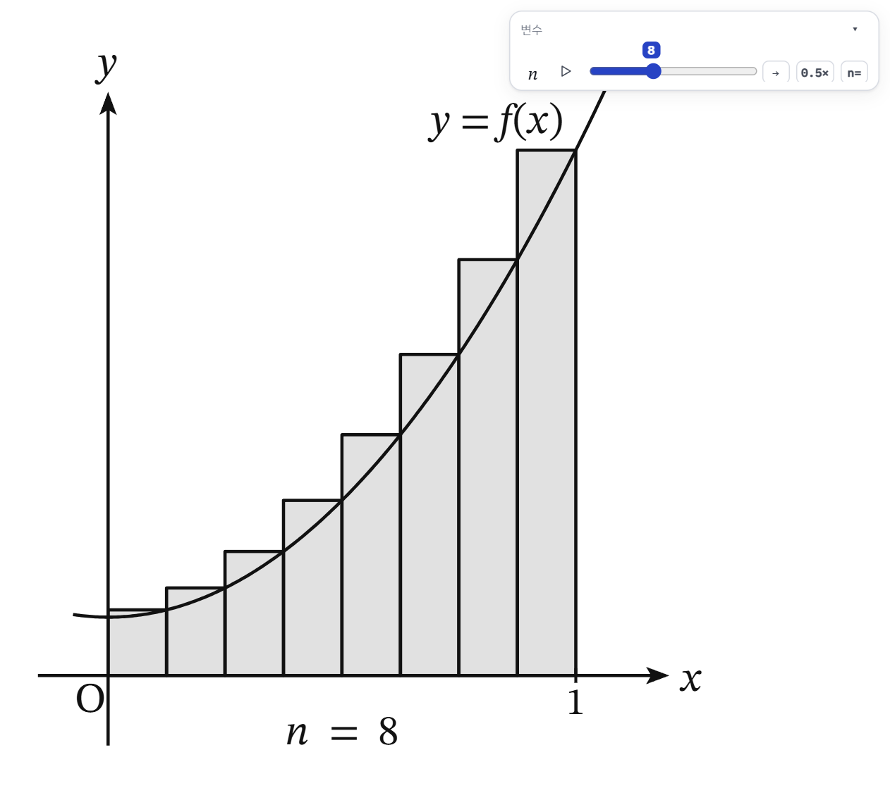
단계별 보여주기
그림마다 등장 순서를 정해 하나씩 보여 줍니다. 오른쪽 클릭 → 단계: 순서 자동 매기기를 누르면 만든 순서대로 번호가 매겨집니다. 도크의 ◀ ▶나 ← → 키로 넘깁니다.
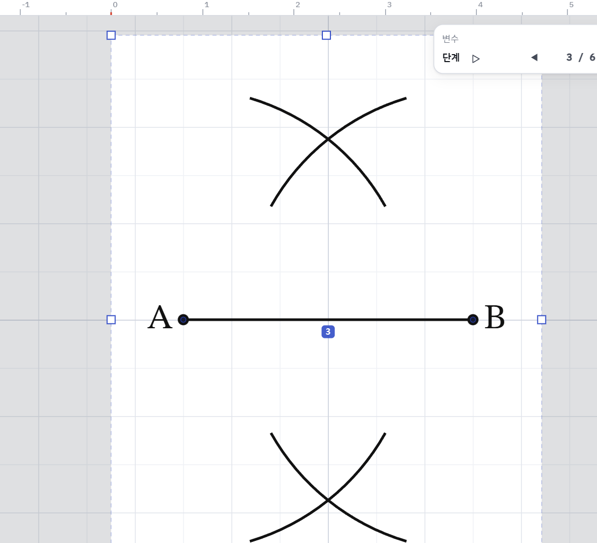
준비된 애니메이션
수학·과학 과목의 샘플 칸 맨 위 애니메이션 묶음에 있습니다. 칸에서 마우스를 올리면 미리 움직이고, 넣으면 멈춘 채로 들어옵니다.
12내보내기
오른쪽 위 [내보내기]는 해상도·여백을 정하는 자세한 창을, 옆의 ▾는 빠른 내보내기 판을 엽니다.
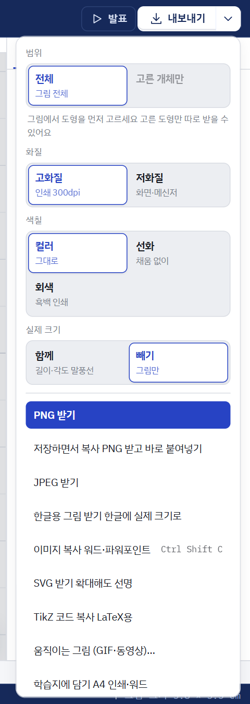
| 형식 | 쓰는 곳 |
|---|---|
| PNG (고화질 300dpi) | 인쇄·웹·메신저. 선명한 그림 파일 |
| JPEG | 용량이 작아야 할 때 |
| 한글용 그림 받기 | 한글(HWP)에 실제 크기로, 확대해도 깨지지 않게 들어가는 그림 파일(.svg) |
| 이미지 복사 Ctrl+Shift+C | 워드·파워포인트에 붙여 넣으면 실제 크기로 들어갑니다 |
| SVG | 확대해도 깨지지 않는 그림 (웹·디자인 프로그램용) |
| TikZ 코드 복사 | LaTeX로 시험지를 만들 때 |
| 학습지에 담기 | 지금 그림을 학습지의 다음 빈 칸에 넣습니다 |
| 움직이는 그림 (GIF·동영상) | 수업 자료·메신저. 슬라이더 한 바퀴·단계 전부 등을 고릅니다 |
- 범위: 전체 / 고른 것만 (아무것도 안 고르면 전체)
- 내보낼 영역: 그림 둘레의 파란 점선이 잘라 낼 범위입니다. 모서리를 끌어 넓힙니다
흑백 시험지용으로 바꾸기
시험지는 대개 흑백으로 인쇄합니다. 속성 창의 [그림 설정] 탭 → [흑백 시험지용으로 바꾸기]를 누르면 색이 회색으로 바뀌고, 비슷한 회색은 빗금·점 무늬로 나뉘어 인쇄해도 구분됩니다. 지도·사람 같은 컬러 그림도 함께 바뀝니다.
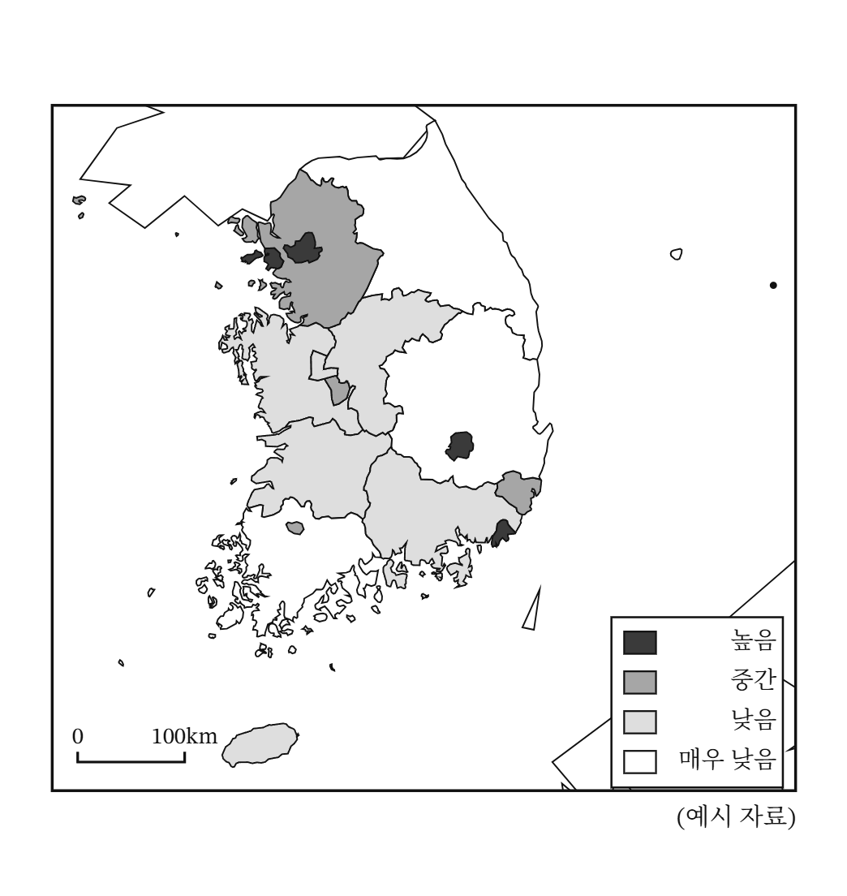
- 되돌리려면 Ctrl+Z
- 같은 탭의 전체 스타일에서 수능 · 교과서(색) · 흑백 인쇄 · 발표용 가운데 고르면 글꼴·선 굵기·글자 크기가 한꺼번에 바뀝니다
한글(HWP)에 넣기
- ▾ → 한글용 그림 받기를 누르면 그림 파일(이름_한글용.svg)이 받아집니다.
- 한글에서 [입력] → [그림]으로 그 파일을 고르거나, 파일을 문서로 끌어다 놓습니다.
- 격물치지에서 본 크기 그대로 들어가고, 확대해도 깨지지 않습니다.
워드·파워포인트에 넣기
- ▾ → 이미지 복사(Ctrl+Shift+C)를 누릅니다.
- 워드·파워포인트에서 Ctrl+V로 붙여 넣습니다.
움직이는 그림 (GIF·동영상)
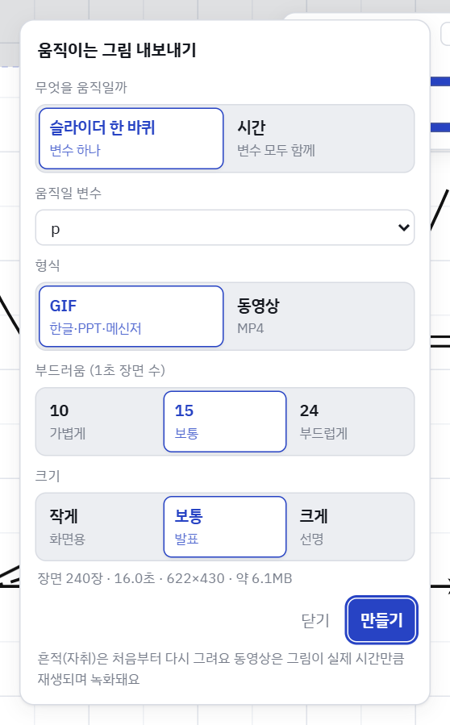
- 무엇을 움직일까: 슬라이더 한 바퀴 / 단계 전부 / 시간 / 반복 도형 차례로
- 형식: GIF(한글·PPT·메신저) 또는 동영상(MP4, 안 되면 WebM)
- 부드러움과 크기를 고르면 장면 수·길이·예상 용량이 보입니다
13학습지 만들기
그림 여러 개를 A4 학습지 칸에 모아 문제 번호·문제 글·정답과 풀이까지 넣고, 인쇄·PDF·워드·한글 파일로 만듭니다. 위쪽 막대의 [학습지]로 엽니다.
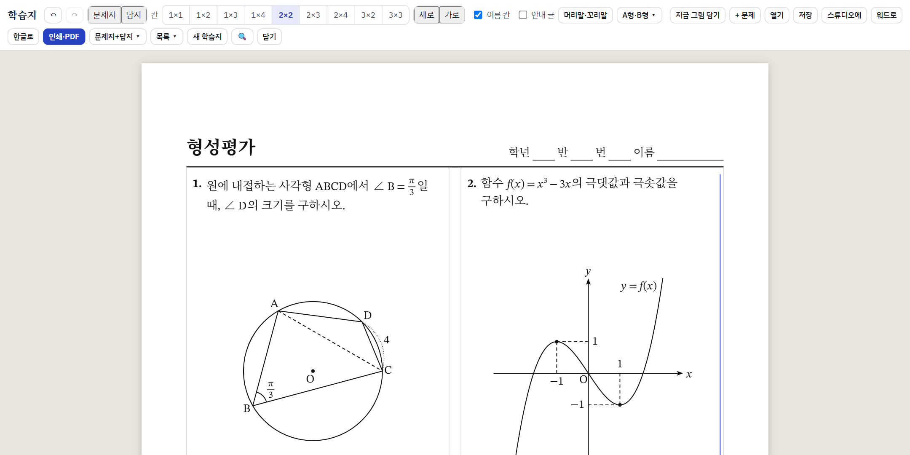
그림 담기
- 그림판에서 ▾ → 학습지에 담기를 누르면 지금 그림이 다음 빈 칸에 들어갑니다
- 학습지 화면 위쪽 [지금 그림 담기], 빈 칸의 [보관함에서]로도 넣습니다
문제 글·보기·정답
- 문제 글은 칸을 눌러 바로 씁니다. 수식은
$와$사이에 씁니다 (예:$x^{2}+1$) - [보기·배점]: 보기 ①~⑤, 정답 번호, 배점 [3점]
- [정답·풀이] 또는 위쪽 [답지]: 답지 보기로 바꿔 정답과 풀이를 씁니다
칸 꾸미기
- 칸 배치: 1×2, 1×3, 2×2, 2×3 — 넘치면 다음 쪽이 저절로 생깁니다
- 칸 높이: 보통·1.5배·2배·쪽 전체
- 순서: 문제 번호를 끌어 다른 칸에 놓거나 ▲ ▼
- 이름 칸: 학년·반·번호·이름 줄 켜고 끄기
A형·B형
문제 순서를 섞은 B형을 학습지 목록에 따로 만듭니다. 보기를 섞어도 정답 번호가 저절로 따라가고, 답지·정답표도 형마다 만들어집니다.
변형 문제 자동 만들기
변수(슬라이더)가 있는 그림을 넣고 문제 글·정답에 \val{a}처럼 숫자 자리를 쓴 뒤 [변형…]을 누르면, 숫자만 바꾼 문제가 원하는 개수만큼 만들어집니다. 답지의 정답도 그 숫자로 바뀝니다.
내보내기
| 단추 | 하는 일 |
|---|---|
| 인쇄·PDF | 인쇄 창에서 프린터로 인쇄하거나 PDF로 저장 |
| 한글로 | 한글(HWPX) 파일. 수식은 한글 수식 편집기로 고칠 수 있습니다 (한글 2014 이후). 머리말·꼬리말·쪽 번호·답지·정답표도 함께 |
| 워드로 | 워드(DOCX) 파일 |
| 저장 / 열기 | 학습지 파일(.json)로 저장했다가 다시 엽니다 |
| 스튜디오에 | 내 스튜디오 폴더에 학습지 파일로 저장합니다 (다음 장) |
14내 스튜디오
내 스튜디오는 그림과 학습지를 내 컴퓨터 폴더에 파일로 저장하는 곳입니다. 브라우저 기록을 지워도 남고, 탐색기에서 옮기거나 USB·원드라이브 폴더를 골라 두면 다른 컴퓨터와 같이 쓸 수도 있습니다. 서버로는 보내지 않습니다.
- 왼쪽 메뉴 [보관함] → [내 스튜디오] 탭 → [폴더 고르기]. 새 폴더(예: 문서 › 격물치지 스튜디오)를 만들어 골라도 좋습니다.
- 그림판에서 Ctrl+S나 스튜디오의 저장 단추로 이름을 붙여 저장합니다. 같은 이름이면 두 번 눌러 바꿔 씁니다.
- 스튜디오에서 연 그림은 고칠 때마다 같은 파일에 자동 저장됩니다(끌 수 있어요).
- 판 기록: 바꿔 쓰기 전 판을
.판기록폴더에 최근 10판까지(자동 저장은 5분에 한 판) 남깁니다. [판]에서 앞 판으로 되돌립니다 - 태그·메모·정렬: 이름·날짜로 정렬하고, 태그·메모를 붙이고, [스튜디오에서 찾기]로 찾습니다
- 옮기기·지우기: 여러 개 골라 [폴더로 옮기기…], [휴지통으로] (지운 것은 그 폴더의 휴지통 폴더로 가서 되살릴 수 있습니다)
- PNG 그림도 함께 저장해 두면 탐색기에서 미리 보기가 됩니다 (끌 수 있어요)
15수업에서 쓰기
발표 모드
위쪽 [발표]나 F5를 누르면 그림만 화면 가득 보입니다. →로 다음 단계, 스페이스로 재생·멈춤, Esc로 끝냅니다.
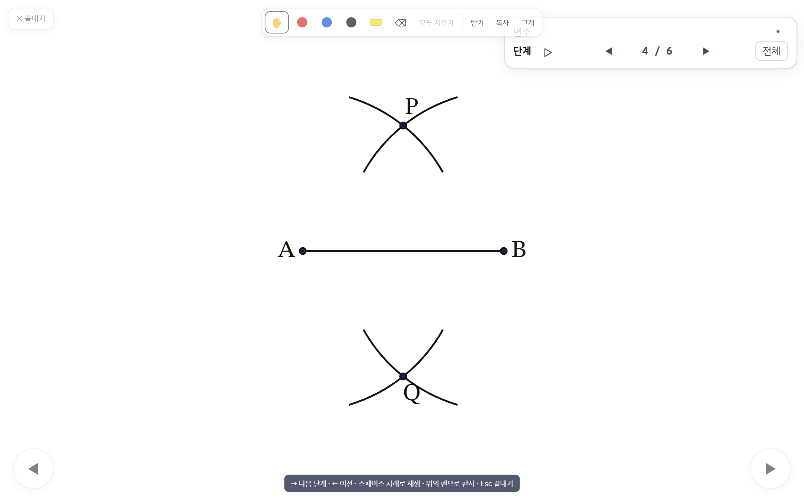
판서 펜
- 발표 화면 위쪽 가운데 펜 막대로 그림 위에 바로 씁니다 (마우스·손가락·전자칠판 펜)
- 빨강·파랑·검정 펜, 형광펜, 지우개, 모두 지우기. 판서는 그림을 바꾸지 않습니다
- [받기]·[복사]로 판서까지 합친 화면을 그림으로 가져갑니다. [크게]는 교실 뒤에서도 보이게 1.5배
학생에게 나눠 주기
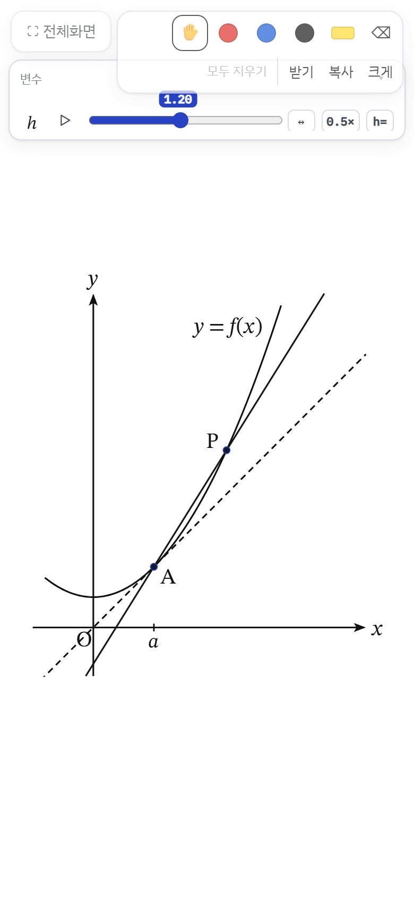
- 학생용 웹페이지 받기: 파일 하나(.html)로 받습니다. 학생은 보기만 하고(슬라이더·재생·단계), 고치지는 못합니다. 인터넷 없이 열립니다
- 학생용 링크·QR코드: 인터넷에 올린 격물치지 주소에서만 만들 수 있습니다
16저장과 파일 · 문제가 생겼을 때
- 자동 저장: 그리던 그림은 브라우저에 저절로 저장됩니다. 다시 열면 대문의 [그리던 그림 이어서 ›]로 이어 그립니다
- 저장 Ctrl+S: 그림 파일(.json)로 받습니다. 다른 컴퓨터로 옮길 때 씁니다
- 열기: 저장한 .json 파일을 엽니다 (그림의 과목도 함께 돌아옵니다)
- 보관함에 담기: 자주 쓰는 그림을 브라우저 보관함에 모아 둡니다 (최대 500개). ✎로 이름·묶음을 붙입니다
- 고른 것만 담기: 오른쪽 클릭 → 고른 것만 보관함에 담기로 묶음 하나만 따로 담습니다. 보관함 카드의 ＋를 누르면 그림판을 바꾸지 않고 지금 그림 옆에 한 묶음으로 붙입니다 (카드 그림을 누르면 그 그림으로 바뀝니다)
- 지난 그림 되찾기: 2분마다, 그리고 다른 그림으로 바뀌기 직전에 최근 30개까지 기록합니다. 보관함 칸 맨 아래에서 되살립니다
백업 파일로 다른 컴퓨터에 옮기기
- 왼쪽 메뉴 [보관함]의 [백업 파일로 저장]을 누릅니다. 보관함 그림·학습지·그리던 그림이 파일 하나(격물-백업-날짜.sujak)로 받아집니다.
- 그 파일을 USB·메일·클라우드 등 편한 곳에 둡니다.
- 다른 컴퓨터의 격물치지에서 [백업 파일 불러오기]로 그 파일을 고릅니다. 지금 있는 것은 그대로 두고 합쳐집니다.
문제가 생겼을 때 — 오류 안전망
예상 못 한 오류가 나도 프로그램이 멈추지 않습니다. 화면 아래에 상자가 떠서 알려 주고, 그 전에 지금 그림을 [지난 그림 되찾기]에 한 판 남겨 둡니다.
| 상자의 단추 | 하는 일 |
|---|---|
| [계속하기] | 상자를 닫고 하던 일을 이어 합니다 |
| [지난 그림 되찾기] | 오류 직전 그림으로 되살립니다 |
| [오류 내용 복사] | 판 번호·오류 내용을 복사합니다 (그림 내용은 담지 않아요). 의견과 함께 보내 주시면 고치기 쉬워요 |
- 컴퓨터가 갑자기 꺼져 저장이 깨져도, 다음에 열 때 바로 앞 판으로 되살립니다. 학습지 목록은 5분마다 따로 사본을 둡니다
- 사용법 칸 맨 아래 오류 기록에서 최근 오류를 봅니다
- 컴퓨터가 바빠 늦게 열릴 때는 하얀 화면 대신 “여는 중이에요”가 보입니다
의견 보내기
- 위쪽 [의견 보내기]에 몇 번이고 적어 [의견 저장]한 뒤, [의견 파일로 내려받기]로 글 파일을 만들어 메일로 보내 주세요
- 이 프로그램은 그림이나 의견을 어디로도 보내지 않습니다. 직접 내려받아 보내 주실 때만 전달됩니다
17단축키 모음
그림판에서 ?를 누르면 단축키 한 장 표가 뜹니다. 갈래별로 모든 단축키가 있고(도구 단축키는 지금 과목에 맞게), 찾기 칸에 이름·초성(ㅂㅈ → 복제)·키 글자를 써서 찾고, [인쇄 (A4 한 장)]로 책상 옆에 붙여 둘 수 있습니다.
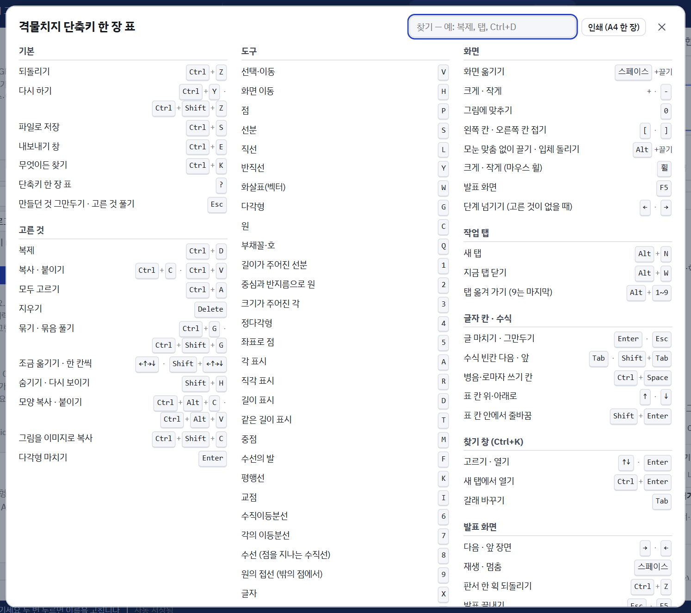
자주 쓰는 단축키
| 키 | 하는 일 |
|---|---|
| Ctrl+Z / Ctrl+Y | 되돌리기 / 다시 하기 |
| Ctrl+C Ctrl+V Ctrl+D | 복사, 붙여 넣기, 복제 |
| Ctrl+A / Delete | 모두 고르기 / 지우기 |
| Shift+누르기 | 여러 개 고르기 |
| Ctrl+G / Ctrl+Shift+G | 묶기 / 묶음 풀기 |
| Shift+H | 고른 것 숨기기·보이기 |
| Ctrl+S / Ctrl+E | 파일로 저장 / 내보내기 창 |
| Ctrl+Shift+C | 이미지 복사 |
| Ctrl+K | 무엇이든 찾기 (틀·보관함·학습지·수식·스튜디오·명령) |
| ? | 단축키 한 장 표 |
| Alt+N / Alt+W | 새 탭 / 탭 닫기 |
| Ctrl+Alt+C / V | 모양 복사 / 모양 붙이기 |
| + - 0 | 확대, 축소, 그림에 맞추기 |
| 스페이스+끌기 / Alt+끌기 | 화면 이동 / 모눈 맞춤 없이 끌기·입체 돌리기 |
| F5 | 발표 모드 |
| Esc | 창·따라하기 닫기, 대문에서 첫 화면으로 |
| V P S C G X E | (수학) 선택, 점, 선분, 원, 다각형, 글자, 지우개 |
| 1~9 | (수학) 수치로 그리기·작도 도구 |
18자주 묻는 질문 · 저작권 안내
가입이나 로그인이 필요한가요?
아니요. 가입·로그인 없이 무료로 씁니다. 그림·보관함·학습지는 쓰는 기기에만 저장되고 어디에도 보내지 않습니다.
앱을 켜니 “PC 보호” / “확인되지 않은 개발자” 창이 떠요
회사 도장(코드 서명)이 없는 프로그램이라 처음 한 번 뜨는 안내입니다. 윈도우는 추가 정보 → 실행, 맥은 아이콘을 오른쪽 클릭 → 열기를 누르세요. 다음부터는 뜨지 않습니다.
새 판은 어떻게 받나요?
앱과 웹은 저절로 알려 줍니다. 내려받은 HTML 파일은 띠의 [새 판으로 바꾸기]로 덮어씁니다. 사용법 칸 [새 판 확인하기]로 직접 확인할 수도 있습니다 (「받기와 설치」 장).
draw.mathmckay.kr 이 열리지 않아요
인터넷 연결을 확인하고 Ctrl+F5로 새로고침해 보세요. 앱이나 HTML 파일은 인터넷 없이도 열립니다.
파일을 열었는데 하얀 화면만 보여요
크롬이나 엣지에서 다시 열어 보세요. 메신저 안의 미리 보기에서는 열리지 않을 수 있습니다. 파일을 오른쪽 단추로 눌러 [연결 프로그램 → Chrome]을 고르면 됩니다.
원하는 그림이 없어요
Ctrl+K로 낱말을 바꿔 찾아보고, 비슷한 그림을 넣어 글자·숫자를 고쳐 쓰세요. 그래도 없으면 [의견 보내기]에 “필요한 그림”으로 적어 주세요.
다른 과목의 칸이 안 보여요
왼쪽 메뉴에는 지금 과목의 칸만 보입니다. 맨 위 과목 칸을 눌러 과목을 바꾸세요. 격물판(또는 치지판) 파일에는 그 갈래 과목만 들어 있으니, 모든 과목은 합본 파일을 여세요.
그림을 한글에 넣었더니 크기가 달라요
▾ → 한글용 그림 받기로 받은 파일을 넣으면 본 크기 그대로 들어갑니다.
흑백으로 인쇄하니 색이 구분되지 않아요
[그림 설정] 탭 → [흑백 시험지용으로 바꾸기]를 누르세요. 비슷한 회색은 빗금·점 무늬로 나뉩니다.
제2외국어 글자를 어떻게 넣나요?
글자 칸을 먼저 누른 뒤 위쪽 [글자판]에서 글자를 누르세요. 컴퓨터에 그 언어 키보드를 설치해 직접 쳐도 됩니다.
장면을 복제했더니 첫 칸만 고쳐져요
복제한 칸은 서로 따로입니다. 칸마다 따로 고치거나, 공통으로 바꿀 것은 복제하기 전에 고치세요. Ctrl+Z로 복제 전으로 돌아갈 수 있습니다.
[새 그림]을 눌러 그리던 그림이 사라졌어요
보관함 칸 맨 아래 [지난 그림 되찾기]를 누르세요. 바뀌기 직전 그림이 기록되어 있습니다.
학교와 집에서 같은 그림을 쓰고 싶어요
보관함의 [백업 파일로 저장]으로 받은 파일을 다른 컴퓨터에서 [백업 파일 불러오기]로 여세요.
인터넷이 없어도 되나요?
그림 고르기·고치기·내보내기는 인터넷 없이 됩니다. 글꼴 일부를 처음에 받아 오므로 처음 한 번은 인터넷이 되는 곳에서 여는 것이 좋습니다. 윈도우·맥 앱은 처음부터 인터넷 없이 켜집니다.
저작권 안내
- 격물치지의 그림 틀은 새로 그린 것입니다(과학 시험지형 그래프 일부는 「도해」 제작자의 허락을 받아 옮겼습니다). 시험 문항·교과서 그림을 그대로 옮겨 담지 않았습니다
- 선생님이 만든 그림은 선생님의 것입니다. 시험지·학습지·수업 자료에 자유롭게 쓰세요
- 남의 시험 그림을 그대로 따라 그려 쓰기보다, 내 문항에 맞게 새로 만들어 쓰기를 권합니다
- 자세한 내용과 함께 쓴 공개 부품 목록은 사용법 칸의 저작권 및 이용 안내에 있습니다
찾는 내용이 없어요 다른 낱말로 찾아보세요